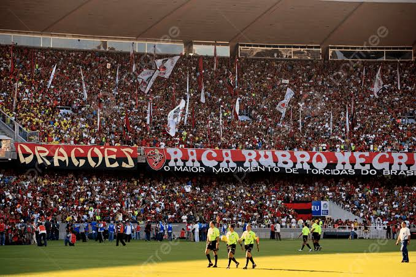

Flamengo vence clássico no Maracanã lotado

Publicado em 07/09/2026
O Rubro-Negro venceu mais uma partida importante no Maracanã, com uma atuação sólida da defesa e gols decisivos no segundo tempo. A torcida compareceu em peso para apoiar o time.